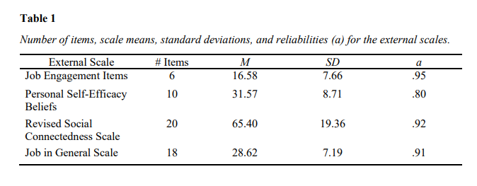
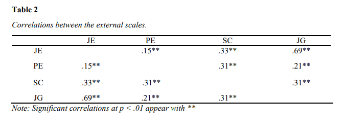
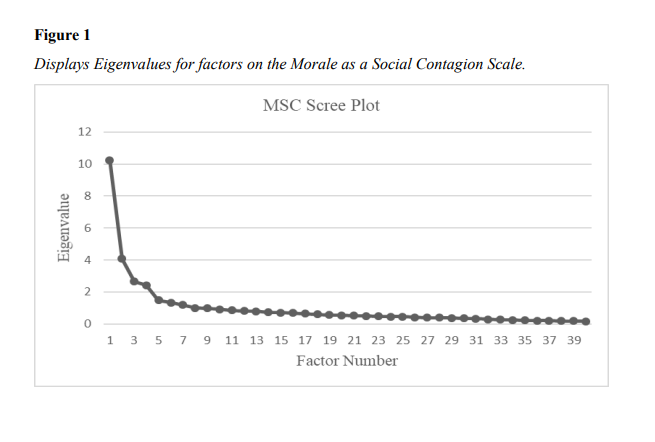
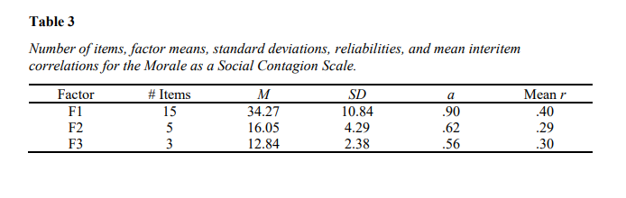
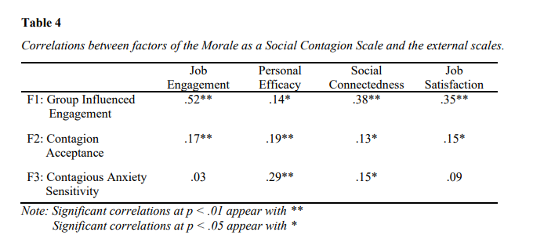

Morale as a Social Contagion: Development of a Scale to Measure the Transfer of Morale in the Workplace
Jared Gillam, Jessica Hamm, Kelli Handorf, Webster Ruiter, and John Staley
Abstract
This study was conducted to further research on morale contagion in the workplace, to better understand the relationship between individuals' emotions and the impact those emotions have on coworkers. The Morale as a Social Contagion Scale (MSCS) was developed to specifically target the interpersonal transfer of enthusiasm, sense of purpose, and confidence in the workplace. The MSCS was distributed along with four other scales to assess construct validity. Through exploratory factor analysis, an emerging factor named Group Influenced Engagement (GIE) showed the most support for the MSCS. Comprised of 15 items, the GIE was the most intercorrelated factor with Cronbach’s Alpha of .90. For future research on morale contagion in the workplace, the 15 item GIE could be implemented when trying to measure the influences of engagement, job satisfaction, social connectedness, and personal efficacy as a single construct.
Keywords: workplace. morale, enthusiasm, sense of purpose, and confidence, engagement
Introduction
Organizations and workplaces are filled with emotions which affect the employees and organization. These emotions can be transferred between employees as well as back and forth with leaders (Humphrey et al., 2020). Humphrey et al. (2020) described how leaders might influence the emotions and moods of their associates in both positive and negative ways. Thus, this process of emotional transfer is defined as social contagion. Social contagion can include automatically synching facial expressions, vocalizations, postures and gestures with those of another person (González-Morales et al. 2012). Social contagion can happen when employees communicate with each other either digitally or in-person (Villafranca, 2016). Villafranca (2016) explores how contagion works with disease as well as within social networks. Compared to disease contagion, social contagion is more than just who the person was in contact with. It can rely on personality, closeness of the relationship, and situational factors to make the person more susceptible. Villafranca describes how individuals have varying levels of susceptibility to contagion – especially when in close contact.
In accordance with Gonzáles et al. (2012), Barsade (2002) established that emotions such as fear and burnout, are more contagious than positive emotions such as joy. A lot of the research focuses on this transfer of negative emotions, like exhaustion and cynicism, leading to burnout (González-Morales, M. G., Peiró, J., Rodríguez, I., & Bliese 2012). This contagion can lead to higher attrition when employees see others quitting (Villafranca, 2016). According to Probst (2005), there is a lack of knowledge and research on how contagion is related to positive attributions (e.g., joy, morale, motivation). Because of this gap in research on positive emotion, such as engagement and morale, the researchers aimed to gain understanding on how morale can be contagious in the workplace.
In the study, the researchers, expanded the definition of social or emotional contagion and focus on how morale might be contagious between employees. According to the APA, morale is described as the level of enthusiasm, sense of purpose, and/or confidence in the worthiness of a goal that can affect a person's or a group's overall performance in working toward that goal - especially when under pressure. We have defined morale contagion as the interpersonal transfer of enthusiasm, sense of purpose, and confidence in an organizational setting and its influence on group dynamics.
To study the impact of morale contagion, the researchers created a new survey. This survey includes newly developed items measuring confidence, sense of purpose, and enthusiasm. We integrated these items with those from external scales measuring job in general characteristics, social connectedness, personal efficacy, and job engagement. We distributed this survey to existing students at our university who volunteered to complete the survey.
Job in General (JIG) Scale
Job satisfaction is covered extensively in previous research and literature. Ironson, et al. developed the job in general scale to complement the Job Descriptive Index Scale. The job in general scale is a global scale to measure overall feelings of the job, and these feelings are expected to predict certain behaviors such as quitting or calling in sick. For our purposes, we were mostly focused on items related to job satisfaction (Ironson, et al, 1989).
Lee & Robbins Revised Social Connectedness Scale
The social connectedness scale measures the relationship between anxiety, identity, and self-esteem. According to the study by Lee and Robbins social connectedness was positively related to self-esteem. The items from this scale measure such things as togetherness, a sense of belonging, relatedness, connection, and approachability (Lee & Robbins, 1998).
Riggs et al Personal Efficacy Beliefs Scale
Riggs developed scales to assess self-efficacy for both individuals and groups based off several studies. The items in our scale measure the employees' perception of such things as skills, performance, expertise, and abilities.
The Rich et al Job Engagement Scale
According to Lepine and Crawford, job engagement measures the investment an individual has in their role. They found that engagement shows a stronger relationship with performance based on their study of 245 firefighters and their supervisors (2010). The Rich et al. Job Engagement Items in our scale measure such things as enthusiasm, energy, pride, and excitement for their job.
As mentioned, current research focuses on contagion related to burnout or other negative emotions. We expect organizations to use our construct to see how employees might affect each other in more positive ways. Our new construct can help organizations determine the level of morale contagion, and if low, figure out a plan for raising it. Ultimately, this can lead to less burnout and attrition.
Hypotheses
After a review of the available literature, the following were hypothesized:
- Hypothesis 1: The dimensions of the Morale as a Social Contagion Scale will be positively correlated with each other
- Hypothesis 2: The Morale as a Social Contagion Scale will be correlated with job engagement.
- Hypothesis 3: The Morale as a Social Contagion Scale will be positively correlated with personal self-efficacy.
- Hypothesis 4: The Morale as a Social Contagion Scale will be positively correlated with social connectedness.
- Hypothesis 5: The Morale as a Social Contagion Scale will be positively correlated with job satisfaction.
Because we are proposing a new scale, we do not yet know the internal reliability or scale validity. To determine whether our scale is an accurate measure of morale as it pertains to social contagions, we conducted an exploratory factor analysis. Based on the literature, we hope that the internal factors, if any, will reflect a socially contagious morale effect as a whole.
Methods
Participants
Participants were recruited from a mid-sized Midwestern University, via SONA, an online research management system. Participants were able to receive course credit for participating in this study by fully responding to the survey. While 326 people initially responded to the survey, 38 were omitted due to missing data and age restrictions. The total number of participants included in the analysis was 288. 165 participants (57.3%) were 18 years old, 71 (24.7%) were 19 years old, 21 (7.3%) were 20 years old, 16 (5.6%) were 21 years old,7 (2.4%) were 22 years old, and 8 people (2.5%) were older than 22 years old with the oldest participant being 49 years old.
From the 288 participants, 88 identified as male (30.6%), 184 identified as female (63.8%), 8 identified as non-binary (2.8%), and 5 identified as transgender (1.7%), prefer not to say, or other 3 (1.1%).
The ethnicities for our sample were 223 white (77.4%), 25 black or African American (8.7%), 23 Asian (8.0%), 11 Hispanic or Latino (3.8%), and were American Indian or Native American 1 (.3%), 5 prefer not to say, or other (1.7%).
Scale Development Process
The Morale as a Social Contagion Scale was created explicitly for this study to investigate respondents’ confidence, sense of purpose, and enthusiasm in the workplace. For confidence, 13 items were created in order to measure respondents’ confidence in the workplace. For sense of purpose 14 items were created in order to measure respondents’ sense of purpose in the workplace. For enthusiasm 14 items were created in order to measure respondents’ enthusiasm in the workplace. The Morale as a Social Contagion Scale consisted of 41 single items that were presented with the following stem “When I am at work ….” Respondents rated items using a 7-point Likert format ranging from 1 (strongly agree) 4 (neutral) and 7 (strongly disagree). Fourteen items were reversed scored.
External Construct Measures
Job Engagement Scale
The Job Engagement Scale assessed the investment an individual has in their role. Of the original 18 items, the researchers used 6, using a 7-point Likert format ranging from 1 (strongly disagree) 4 (neutral) and 7 (strongly agree). An example item is, “When I am at work, I am enthusiastic in my job”.
Job in General Scale
The Job in General Scale measures certain characteristics such as how pleasant, bad, and ideal the employee's job is currently. This is intended to gauge how satisfied an employee is with their job. The researchers included all 18 items using the stem “Imagine you are at your current job and working with your immediate supervisor. Overall, what is it like most of the time?” Choices were presented in a 3-point multiple choice format with the choices being “Yes”, “Cannot Decide”, and “No”.
Personal Efficacy Beliefs Scale
The Personal Efficacy Beliefs scale assesses self-efficacy for both individuals and groups. Moreover, the scale measures employees’ own self-efficacy regarding skills, performance, expertise, and abilities. The researchers included all 10 items, using a 7-point format ranging from 1 (strongly disagree) 4 (neutral) and 7 (strongly agree). An example of an item is “When I am at work, I am very proud of my job skills and abilities”.
Social Connectedness
The Social Connectedness Scale measures the relationship between anxiety, identity, and self-esteem. The researchers included all 20 items, using a 7-point format ranging from 1 (strongly disagree) 4 (neutral) and 7 (strongly agree). An example of an item is “When I am at work, I can catch myself losing sense of connectedness with society”.
Procedure
The researchers obtained approval from the Institutional Review Board (IRB) before recruiting participants. An announcement was posted on SONA, which allows researchers to anonymously recruit participants for research studies. To participate, a student was directed to click on a digital link that directed them to the survey presented in Qualtrics. Before proceeding, participants were given a consent form and were able to select “I consent” or “I do not consent”. If they consented to participating they would be directed to the survey questions. After completing the survey, participants were given credit regardless of completion.
Results
Descriptive Statistics
The Job Engagement Scale (M = 16.58, SD = 7.66, a = .95) consisted of 18 items total, however we only included the items for the Emotional Engagement subscale which consisted of 6 items. The Revised Social Connectedness Scale (M = 65.40, SD = 19.36, a = .92) consisted of 20 items with 10 items as normal and 10 items as reverse coded. The Personal Efficacy Beliefs Scale (M = 31.57, SD = 8.71, a = .80) consisted of 10 items with 4 items as normal and 6 items as reverse coded. Lastly, Job in General Scale (M = 28.62, SD = 7.19, a = .91) consisted of 18 items with 10 items as normal and 8 items as reverse coded. No changes were necessary to make in order to improve the reliability of these scales as all showed moderate to strong reliability, which is indicated by their corresponding alpha levels.

Before conducting any correlation analyses, Job Engagement was transformed by taking the square root of each value due to its positive skew and the new variable was named SQRTJobEng. However, it was found that this transformation had no meaningful impact on the rest of the analyses. The external constructs showed significant intercorrelations amongst them. Job Engagement significantly correlated with Personal Efficacy (r = .15, p < .01), Social Connectedness (r = .33, p < .01), and Job Satisfaction (r = .69, p < .01). Personal Efficacy correlated with Social Connectedness (r = .31, p < .01) and Job Satisfaction (r = .21, p < .01). Social Connectedness correlated with Job Satisfaction (r = .31, p < .01).

Exploratory Factor Analysis and Intercorrelations
Using SPSS, an exploratory factor analysis was conducted on all three subscales that were developed in the present study. First subscales were factor analyzed using principal axis factoring with Oblimin rotation and Kaiser Normalization. Eight initial factors were found in eight iterations for the Morale as a Social Contagion Scale. A rotated solution was converged in 36 iterations. Four factors emerged that met the threshold of concrete factors after further investigation into the total variance explained by each. Items that had a factor loading of .35 or greater and did not cross load on other factors at .30 were interpreted as meeting the minimum statistical criteria to load on a single factor. The fourth factor failed to meet the necessary criteria and was therefore excluded as one of the single concrete factors. Factor one explained 25.36% of the variance, factor two explained 10.21% of the variance, and factor three explained 6.65% of the variance. Figure 1 shows the screen plot that gives a visual representation of the cutoff point for factor loadings meeting the necessary criteria.

An exploratory factor analysis was also conducted on the subscale of the Morale as a Social Contagion scale using principal axis factoring with Varimax rotation and Kaiser Normalization. The rotated solution converged in 9 iterations. This factor analysis did not yield results differing from the first, so the exploratory factor analysis results are described in this paper.
Three concrete factors emerged from the exploratory factor analysis for the Morale as a Social Contagion Scale with a total of 22 items. Factor one consisted of 15 items: E1, E3, E4, E5, E6, E7, E8, C5, C12, SP1, SP2, SP4, SP5, SP6 and SP7 (M = 34.27, SD = 10.84, a = .90) and was labeled “Group Influenced Engagement”. Factor two consisted of four reverse coded items: SP8, SP9, SP10, and SP14 (M = 16.05, SD = 4.29, a = .62) and was labeled “Contagion Acceptance”. Factor three consisted of two reverse coded items E10 and C13, and one normal item C11 (M = 12.84, SD = 2.38, a = .56) and was labeled "Contagious Anxiety Sensitivity”. Theitems in factor three initially estimated an alpha coefficient of -.43, therefore the reverse coded items were coded normally to achieve an alpha coefficient of .56.

The intercorrelations found in factor one between items ranged from .173 to .715, which suggests a moderate to strong positive relationship between the items and that they are moderately related in this factor. For factor two, the intercorrelations between items ranged from .143 to .396, which indicates a moderate positive relationship amongst the items and that the items in this factor are moderately related. Item intercorrelations for factor two ranged from .262 to .368, indicating a moderately positive relationship between items and that the items are moderately related.
Pearson correlation coefficients were used to discover significant correlations between the factors of the Morale as a Social Contagion Scale as well as with the external scales. Factor one correlated with factor two weakly (r = -.19, p < .05) and factor three moderately (r = .42, p < .05). Factor two correlated with factor three weakly (r = -.17, p < .05). Factor one, Group Influenced Engagement, correlated significantly with Job Engagement (r = .52, p < .01), Personal Efficacy (r = .14, p < .05), Job Satisfaction (r = .35, p < .01), and Social Connectedness (r = .38, p < .01). Factor two, Contagion Acceptance, correlated significantly with Job Engagement (r = .17, p < .01), Personal Efficacy (r = .19, p < .01), Job Satisfaction (r = .15, p < .05), and Social Connectedness (r = .13, p < .05). Factor three, Contagious Anxiety Sensitivity, significantly correlated with Personal Efficacy (r = .29, p < .01) and Social Connectedness (r = .15, p < .05). Factor three did not correlate significantly with Job Engagement or Job Satisfaction.

Discussion
The exploratory factor analysis presented a variety of results regarding the three emerging factors which seems to support some aspects of our proposed scale while also potentially invalidating other suggested items and intercorrelate relationships. Of the three emerging factors, the first, labeled Group Influenced Engagement (GIE) offers the most support for our original proposal of the Morale as a Social Contagion Scale (MSCS). Most notably, this is due to the greater number of items which loaded onto Group Influenced Engagement (15) in comparison to the other factors of Contagion Acceptance (4) and Contagion Anxiety Sensitivity (3). Additionally, GIE represents the most intercorrelated factor among our results with a Cronbach’s Alpha of .90, suggesting that it is also the strongest factor from our analysis. This is in contrast to the other factors which had alpha scores of .62 and .56, generally below the acceptable level of reliability for scale development. Therefore, our key findings focus primarily on GIE and its accompanying items.
Five hypotheses were developed in coordination with the study which outlined the expectations of the research team. The first of these hypotheses predicted that the dimensions of the Morale as a Social Contagion Scale would all correlate positively with each other. The results of the study showed otherwise. Contagion Acceptance correlated negatively with both Group Influenced Engagement and Contagion Anxiety Sensitivity. Therefore, we failed to reject the null hypothesis for H1. The following four hypotheses all separately predicted that the Morale as a Social Contagion Scale would be positively correlated with each of our external scales relating to job engagement, personal self-efficacy, social connectedness, and job satisfaction. The results of the study indicated that all four external scales correlated positively with each component of the Morale as a Social Contagion Scale and therefore we rejected the null hypotheses for H2, H3, H4, and H5.
To account for scale validity, the analysis also included a series of external scales through which the factors were compared. By calculating Pearson correlation coefficients between the external scales and factors, it was possible to develop a relative baseline of the conceptual content of the factors. It is through such Pearson correlations that the naming conventions for the factors were considered. For example, GIE correlated significantly (.52) with the external job engagement scale and so it was determined that engagement should be a descriptor of the first factor. The first factor also correlated significantly with personal efficacy (.14), job satisfaction (.35), and social connectedness (.38). Specifically, job satisfaction and social connectedness had stronger correlations with factor one than factors two and three. Therefore, the correlations suggest that GIE contains a combination of items related to job engagement, social connectedness, and job satisfaction. The original definition used to describe the proposed Morale as a Social Contagion Scale contained hypothesized dimensions expressed as enthusiasm, sense of purpose, and confidence all within the context of interpersonal transfer. While the items were developed separately with these three proposed dimensions in mind, the results indicate that aspects of all three hypothesized dimensions loaded onto GIE considerably, while only loading onto factors two and three minimally. This evidence is reflected in the number of items in each scale, as mentioned previously. Overall, the correlations of GIE with the external scales satisfied the expectations of the hypothesized scale, thereby confirming the contents of the hypothesized scale while invalidating the proposed dimensions. For this reason, GIE represents the only factor that upholds the validity and reliability standards for scale development and should therefore be considered as its own 15-item scale.
This study suggests that a Group Influenced Engagement Scale (GIES) could be implemented in organizations to measure the influences of engagement, job satisfaction, social connectedness, and personal efficacy as a singular construct. For all intents and purposes, this scale functions like the originally proposed MSCS contents, but it has been greatly simplified with the original three dimensions condensed into a single unidimensional scale. Fortunately, the content of the newly proposed GIES contains items from all three original dimensions (enthusiasm, sense of purpose, and confidence) of the MSCS thereby demonstrating some dimensional similarities. However, it should be noted that GIE contains only 2 confidence items at approximately 13% of the total scale which is a major divergence from the originally proposed scale at approximately 33% confidence items. Therefore, the newly proposed GIES is much less confidence dependent than our hypothesized scale.
Potential Limitations
There are several limitations that may have impacted the development of the MSCS. The first of these limitations came with the original proposal for the definition of Morale as a Social Contagion. To determine the definition that would be used for the construct, APA resources were utilized to define the morale component to include enthusiasm, confidence, and sense of purpose. Through these three dimensions, the items for the MSCS were written. This approach to item development was problematic as it relied directly on researcher interpretation of APA language and assumed that the APA definition of morale referred to the dimensions of enthusiasm, confidence, and sense of purpose as proven components. While all three of these dimensions loaded onto factor one, confidence did not load nearly as much as the other factors with only 2 of the 15 items representing confidence. Additionally, it was hypothesized that each of the dimensions would load separately onto different factors, however the results demonstrated that GIE loaded items from all three dimensions of morale. It might be that this is a consequence of relying too heavily on the language of the APA resources instead of conducting a proper literature review or meta-analysis of morale and social contagion-related scales.
Another limitation of this research is present in the demographic data of the survey responses. Due to the fact that data was collected through SONA, the average age of participants in this study was approximately 19 years old. Such an age bias may impact the validity of the data due to the limited work experience of younger participants. As such, the results of this study may not be generalizable to standard workforce populations. Furthermore, the responses included a gender bias in that 63.8% of respondents identified as female with only 30.6% identifying as male. To account for these demographic limitations, future studies should consider collecting data more precisely from a balanced sample of participants in both age and gender.
Future Research
Noting the potential limitations of the study, future research should seek to implement countermeasures to ensure that item development is based on supported research and that participant demographics are generalizable to standard workforce populations. Relatedly, future research should aim to test correlations of other scales with the newly proposed Group Influenced Engagement Scale. To identify potential scales with which to compare the GIES, an extensive literature review or meta-analysis of the components of morale and social contagions should be conducted. Lastly, it would be appropriate to attempt to replicate the results of this study to confirm the reliability of the items in the GIES.
Conclusion
Overall, the scale development and exploratory factor analysis of the proposed Morale as a Social Contagion Scale provides opportunities for future research that will help to shed light on the impact of morale as a social contagion in the workplace. While the original structure of the MSCS was not maintained, the results indicate that the newly proposed 15-item Group Influenced Engagement Scale significantly correlates with all four external scales relating to job engagement, job satisfaction, personal efficacy, and social connectedness. Additionally, the GIES maintains a Cronbach’s Alpha of .90 which demonstrates solid reliability. Therefore, it can be said that the study was successful in the development of a scale which measures the components of morale as a social contagion, although the organization of said components was different than what was hypothesized in the study.
References
Barsade, S. G. (2002). The ripple effect: Emotional contagion and its influence on group behavior. Administrative science quarterly, 47(4), 644-675.
Block, P., & Burnett Heyes, S. (2020). Sharing the load: Contagion and tolerance of mood in social networks. Emotion.
Humphrey, R. H., Burch, G. F., & Adams, L. L. (2016). The benefits of merging leadership research and emotions research. Frontiers in psychology, 7, 1022.
Ironson, G. H., Smith, P. C., Brannick, M. T., Gibson, W. M., & Paul, K. B. (1989). Construction of a Job in General scale: A comparison of global, composite, and specific measures. Journal of Applied Psychology, 74, 193-200.
Lee, R. M., & Robbins, S. B. (1998). The relationship between social connectedness and anxiety, self-esteem, and social identity. Journal of Counseling Psychology, 45(3), 338–345. doi:10.1037/0022-0167.45.3.338
Petitta, L., & Jiang, L. (2020). How emotional contagion relates to burnout: A moderated mediation model of job insecurity and group member prototypicality. International Journal of Stress Management, 27(1), 12.
Rich, B. L., Lepine, J. A., & Crawford, E. R. (2010). Job Engagement: Antecedents and Effects on Job Performance. Academy of Management Journal, 53(3), 617–635. doi:10.5465/amj.2010.51468988
Riggs, M. L., Warka, J., Babasa, B., Betancourt, R., & Hooker, S. (1994). Development and Validation of Self-Efficacy and Outcome Expectancy Scales for Job-Related Applications. Educational and Psychological Measurement, 54(3), 793–802. doi:10.1177/0013164494054003026
Villafranca, E. S. (2016). Contagion, Trajectory, and Turnover: Exploring Network Factors Influencing Turnover Over Time (Doctoral dissertation, Baylor University).
Appendix
Looking for help with your business?
I'm a co-founder of Benchmarke.io, a business consulting service that specializes in technical business solutions. Feel free to reach out and we'll see how we can help!